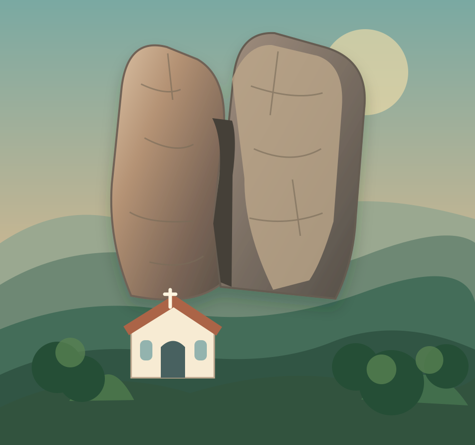

Presença dos povos Cariris
A presença indígena é parte fundamental da história da região. Os povos Cariris habitaram o território antes da ocupação colonial.
Conheça Fagundes por suas paisagens, sua gente, suas lutas e suas tradições. Depois, descubra quanto você aprendeu — jogando.
Antes de existir como município, Fagundes já era território de encontros, disputas, trabalho e resistência. Conhecer essas camadas ajuda a compreender quem somos.
A presença indígena é parte fundamental da história da região. Os povos Cariris habitaram o território antes da ocupação colonial.
O território aparece em registros antigos relacionados à Serra do Bodopitá, às sesmarias e à antiga denominação de Canas Bravas.
Uma mobilização popular que se espalhou pela região em meio a conflitos com medidas do Império.
O movimento questionou mudanças e imposições envolvendo pesos, medidas e práticas de fiscalização, envolvendo diferentes localidades paraibanas.
Registros do IBGE relatam uma primeira elevação de Fagundes à condição de município, seguida da perda dessa autonomia.
Lei Estadual nº 2.661: Fagundes se desmembra de Campina Grande. A instalação do município ocorreu em 31 de dezembro do mesmo ano.
Uma disputa pelo abastecimento de água marcou a memória política e social local, segundo o registro histórico da prefeitura.
Síntese baseada na história publicada pela Prefeitura e no histórico do IBGE. Detalhes, datas e interpretações podem variar entre fontes históricas.
Um roteiro de descobertas que vai além de datas e monumentos: lugares, cultura, cidadania e pessoas que fazem a cidade existir.
O principal símbolo turístico local reúne natureza, religiosidade e tradição oral.
Descobrir a lenda ↗A agricultura familiar, o comércio local e os serviços ajudam a contar a história econômica de Fagundes. O IBGE reúne os indicadores do município.
Ver dados do IBGE ↗A devoção popular associada à pedra, igrejas e diferentes comunidades religiosas compõem uma paisagem de fé plural.
Conhecer uma fonte ↗Prefeitura e Câmara exercem funções distintas. Compreender o Executivo e o Legislativo é também conhecer a história política do município.
Acessar a Câmara ↗Escolas, Câmara, Prefeitura, igrejas e praças são locais onde a memória e a vida cotidiana se encontram. Explore seus papéis e transformações.
Proposta de pesquisa ↗O histórico do IBGE menciona Geraldo F. Dantas, Salvino Figueiredo e José Cruz Herculano entre os colaboradores da emancipação.
Consultar a fonte ↗
ILUSTRAÇÃO ORIGINAL • REPRESENTAÇÃO ARTÍSTICAConta a tradição que uma imagem de Santo Antônio foi encontrada entre as rochas. Levada para uma igreja, ela teria desaparecido e reaparecido junto à pedra. É essa narrativa popular que inspira um dos nossos jogos.
O lugar segue atraindo visitantes por sua paisagem e sua ligação com a fé. A passagem pela fenda também integra as crenças transmitidas de geração a geração.
Referência: Paraíba Criativa — Pedra de Santo Antônio.
Jogos gratuitos para jogar sozinho ou com até seis participantes no mesmo aparelho. Ninguém precisa criar conta.
Os desafios da pedra e da fenda são representações digitais fictícias. Não representam instruções de exploração física nem recomendam atravessar fendas reais. Em visitas, respeite sinalização e orientações locais.
Mapa do tesouro — encontre patrimônios da cidade
Detetives da memória — descubra pistas em documentos
Linha do tempo — ordene acontecimentos
Este portal pode apoiar aulas de História, Geografia e projetos interdisciplinares. Na dinâmica em equipes, as perguntas passam de uma equipe a outra no mesmo dispositivo.
Abrir jogos educativos ↗Investigar — leia um trecho da história local e identifique sua fonte.
Colaborar — jogue em dupla ou trio e discuta as respostas.
Pesquisar — fotografe ou desenhe um patrimônio e investigue sua função.
Registrar — crie um pequeno relato de história oral com autorização do entrevistado.
Um portal de história precisa deixar claro o que está documentado, o que é tradição oral e o que ainda precisa ser pesquisado.
Versão inicial de demonstração educativa. Ainda não é um inventário completo ou oficial do patrimônio municipal. Imagens da pedra são ilustrações originais, não fotografias. Conteúdos podem ser ampliados mediante pesquisa documental, entrevistas autorizadas e curadoria editorial.